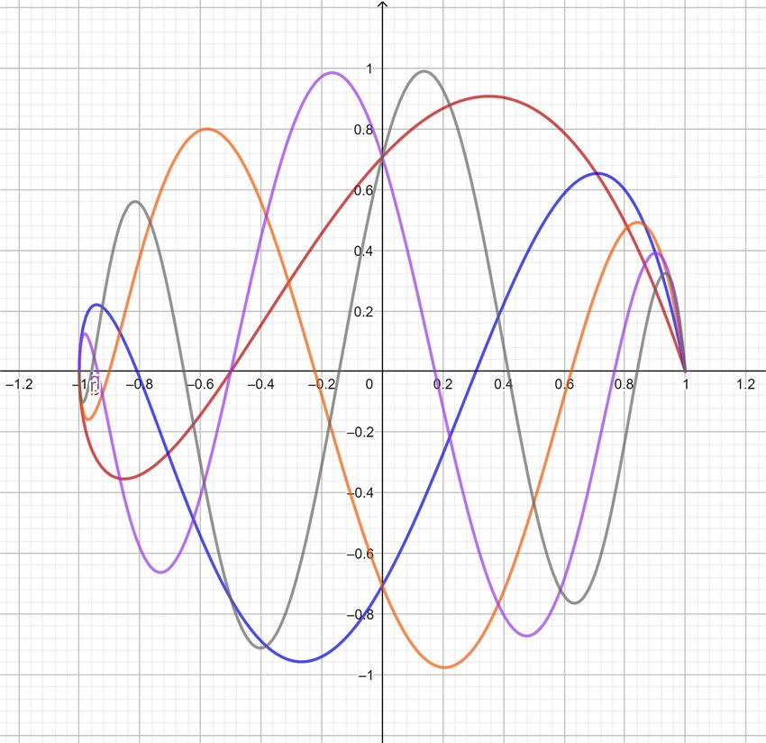
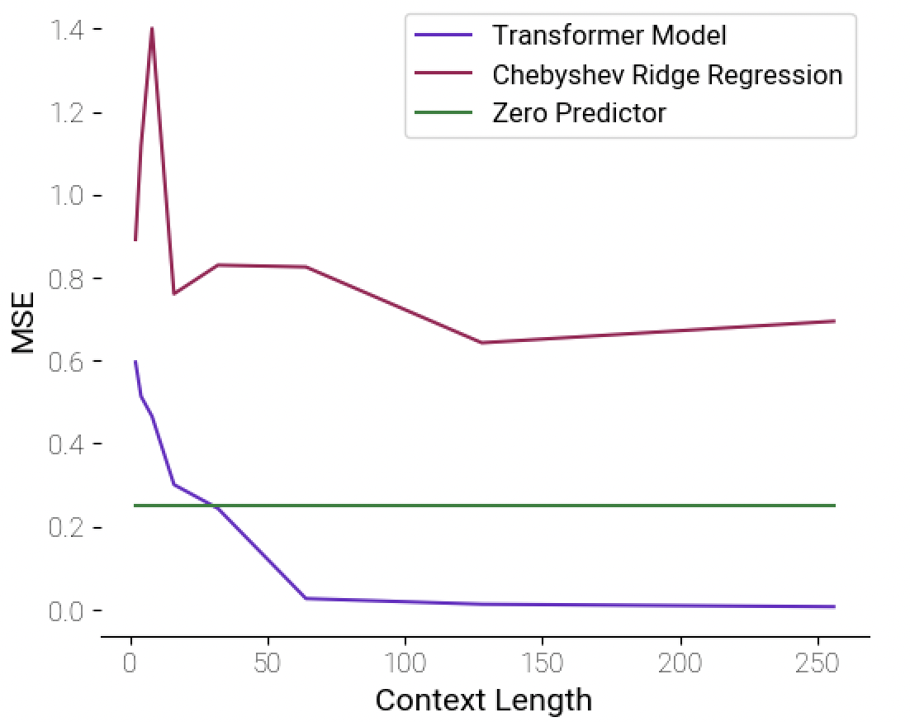
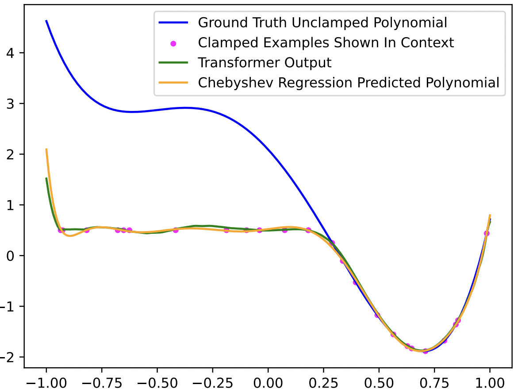
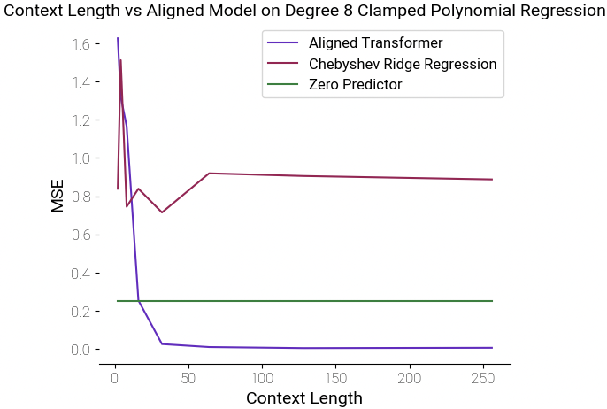
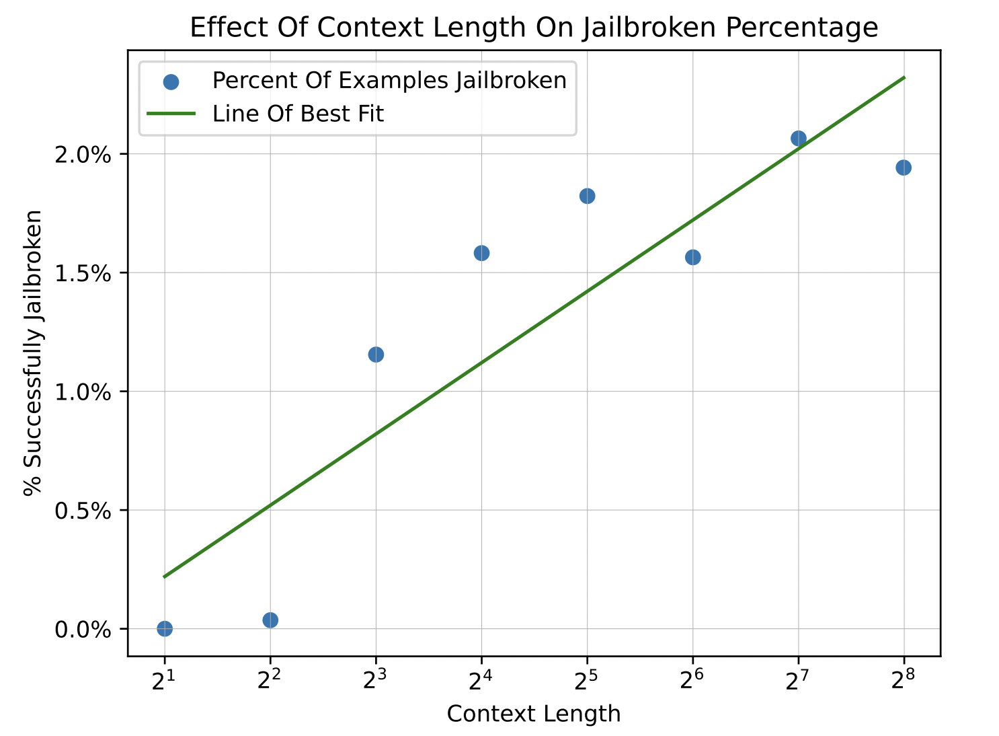
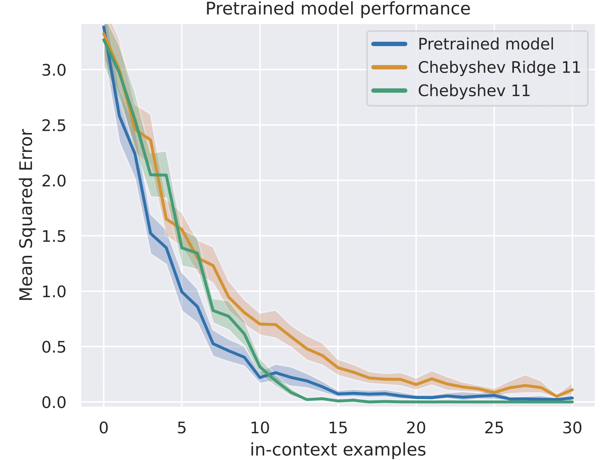
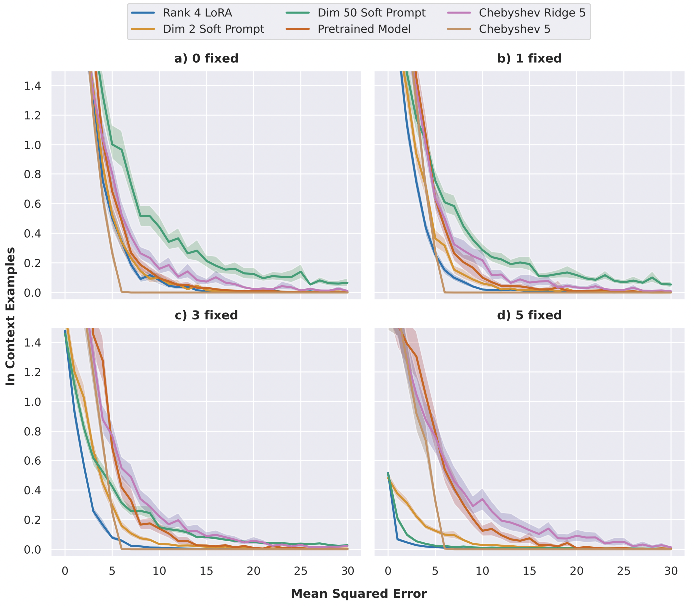

Large language models continue to captivate the public with incredible and rapid performance improvements. It is widely understood by the machine learning community that much of these improvements come with scaling these models to become much larger. But with larger models comes longer iteration cycles, further complexity in understanding why a model predicted something, and, of course, a requirement for significant compute. This leads to the question: can we represent large language models such that we can understand key behaviors without requiring massive amounts of compute?
In our recent work, we explore the possibility of modeling LLM behavior using a simple toy domain – polynomial regression. Specifically, we demonstrate how in-context alignment and soft-prompting phenomena visible in large language models follow similar trends in the domain of in-context polynomial regression. In short, we propose polynomial regression as a playground to explore LLM behavior, allowing for faster iteration, less compute, and greater understanding of model phenomena.
Why Polynomial Regression?
The computational challenges of training large models from scratch have been widely recognized. Previous works have honed in on the core issue of in-context learning and proposed using very simple classes of functions as a way to study phenomena without having to use very large models or tokenization. However, prior examples of simple function classes like linear regression, sparse linear regression, decision trees, and multi-layer-perceptrons are too unstructured to be able to naturally capture ideas related to alignment or jailbreaking, or to systematically explore fine-tuning.

Chebyshev polynomials at work.
With these past works in mind, we chose a toy based on simple polynomial regression. Of course, trying to model polynomials naively can lead to issues, one being that points with arbitrarily large coordinates can unnecessarily dominate the loss function. To address these and additional concerns, we constrain our polynomials to ones in the Chebyshev basis, whose y values are bounded between -1 and 1.
But First: Can A Smaller, Toy Model Learn Polynomial Regression In-Context?
We use GPT-2 as our toy model, consisting of a mere 1.2 million parameters (for reference, GPT-4 has around 175 billion parameters).
To claim that our task is a toy domain for LLM phenomena, we must confirm that our model is able to perform said task – in this case, vanilla polynomial regression.
The goal of our task is as follows: given a sequence of \((x,y)\) pairs and a random \(x\) coordinate \(x_t\) along polynomial \(p(x)\), predict coordinate \(y_t\) such that \((x_t, y_t)\) lies on \(p(x)\). We confirm that our model is indeed able to learn polynomial regression in-context with near perfect accuracy.
Alignment
Modeling Alignment
For testing refusal-style alignment, we edit our task such that the \(y\) values in the context window are clamped at a certain threshold \(T\). Instead of predicting the polynomial \(p(x)\), the model should now predict \(\min(p(x), T)\). This task was chosen as it allows our model to leverage what it already knows while also learning a new behavior. It resembles many real-world alignment objectives such as answering questions so long as the desired result does not exceed some level of toxicity or offensiveness.
Behavior I. Eval-Time Context Clamping
Through our first results, we see that these models, which have never before seen clamped y values in the context during train time, are able to learn clamping behavior quite well. Performance seems relative to the number of examples in the context window – the more context given about the target point from points near it, the better our model learns alignment. These results coincide with previous work done on larger models and may help explain why many-shot in-context learning works so well.


The left plot displays MSE of our transformer model as compared to two baselines for a degree 8 polynomial. The right plot shows the ground truth, clamped, and predicted polynomial of degree 4.
Behavior II: Finetuning → Jailbreaking Ability
We take our model and finetune it on data that is clamped as described above. We then examine the potential of our model to be jailbroken and compare the behavior of our model with the behavior observed in LLMs. We query our model with a context window of malicious (unclamped) examples, and ask it to provide the y value for the last point, whose ground truth y value lies above the threshold. As the context length increases, we see the model is more likely to output unaligned responses. These results match those from previous work examining the effect of jailbreaking in LLMs


Parameter Efficient Finetuning (PEFT)
Modeling PEFT
For finetuning, we only sample weighted combinations of Chebyshev polynomials of degrees 0 to 5. We also fix up to five of the coefficients to be 1; this leads to a marginal distribution of inputs that varies with the x coordinate. This creates a new task that is similar to the original but still distinct.
Behavior I. LORA vs Soft Prompts
We compare the performance of LORA and soft-prompting. As the number of fixed coefficients is increased, the polynomials sampled become less random, and soft prompting approaches the performance of LoRA. With zero fixed coefficients, soft prompting with fifty prompts drops significantly. This makes sense, since LORA cannot improve performance much, as this task is similar to the one on which our model has been trained, but for soft-prompting, our model effectively must ignore all fifty prompts.


Why This Work Matters
In this work, we demonstrated a playground for exploring LLM phenomena such as parameter efficient finetuning and alignment. This line of work is necessary: in order to better understand LLMs as they continue to scale, we must find ways to quickly iterate on design decisions while prioritizing understanding their emergent phenomena. There’s of course much more to uncover. In all, PolyGround serves as a useful tool for future work in leveraging toy models to study other phenomena associated with in-context learning in large language models.
For Further Detail:
Please check out our accepted ICML workshop paper on arXiv.